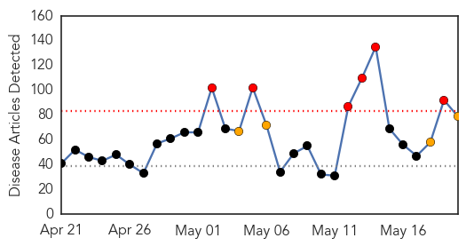
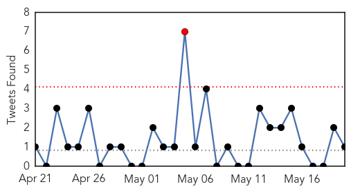
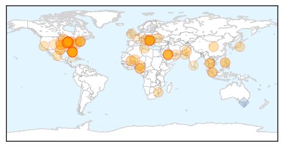
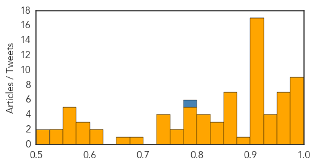

Toggle navigation
Early Warning
Daily Alerts
Unknown
May 20, 2014
Compare to:
-
Dengue Fever
Hemmorhagic Fever
Mold/Fungal Infection
Influenza
Meningitis
Pertussis / Whooping Cough
Middle East Respiratory Syndrome
Cholera
Hepatitis
Chikungunya
Yellow Fever
Bubonic Plague
West Nile Virus
Swine Flu
Ebola
Measles
Mumps
30 Day Trends
Web: 6
alerts
, 4
warnings
Twitter: 1
alerts
, 0
warnings
Top Articles:
Showing top 50 articles...
1.000
An American has MERS: Where did virus come from?
0.998
MERS virus now present in the US
0.997
MERS patient discharged from Orlando hospital
0.993
‘Third Mers case in US is not infectious’
0.991
MERS now in 18 countries; three in U.S. confirmed to have viral illness
0.989
How MERS Made The Leap From Animals To Humans
0.986
Two healthy Greene County residents tested for MERS
0.979
U.S. doctor exposed to MERS leaves Canada
0.978
Doctor exposed to MERS in Florida hospital remained healthy, left Canada
0.974
Foreign health workers in Saudi could spread MERS
0.969
Details of Illinois MERS patient emerge
0.966
Rhode Island lifts widespread flu declaration
0.961
The Portland Press Herald / Maine Sunday Telegram
0.958
Two positive rabies cases discovered at Fort Hood
0.955
Risk of spread of Middle East virus 'low' in U.S.
0.952
Florida MERS Patient Released From Hospital
0.949
MERS patient from Saudi Arabia released from Florida hospital; officials say he's recovered
0.948
UN agencies step up emergency response to flood victims in Balkans
0.947
Ban expresses concern for flood-hit Balkans as UN scales up disaster response
0.933
MERS Has Arrived on American Soil
0.921
Bird flu experiments pose threat, researchers warn
0.917
Chicago Tribune
0.917
Chicago Tribune
0.917
Chicago Tribune
0.917
Chicago Tribune
0.917
Chicago Tribune
0.917
Chicago Tribune
0.917
Chicago Tribune
0.917
Chicago Tribune
0.917
Chicago Tribune
0.917
Chicago Tribune
0.917
Chicago Tribune
0.917
Chicago Tribune
0.917
Chicago Tribune
0.917
Chicago Tribune
0.912
Lassa fever: Six medical workers confirmed positive in Ebonyi
0.910
The world windows to Thailand
0.889
6 Nigerian health workers test positive to Lassa fever
0.866
Nigeria emergency management agency
0.866
U.S. says has not had recent contact with Libya's Haftar
0.866
S.Africa platinum firms, striking union return to mediated talks
0.866
Thailand's justice minister says govt still running country
0.866
Thai pro-government activist urges restoration of "democratic principles"
0.866
Two people killed, 55 wounded in clashes in Libyan capital-minister
0.866
Mali "at war" with northern Tuareg separatists
0.844
One-third of the world infected with TB, new efforts needed
0.834
WHO warns of possible epidemic in Serbia
0.828
County resident hospitalized for E. coli, possibly linked to undercooked ground beef
0.821
Deadly pig virus likely to ease in US by year-end
0.811
Doctors: Illinois MERS patient not contagious
Top Tweets:
0.786
Trivia Tuesday: During the Spanish Flu pandemic gatherings were banned in some cities in hope to limit the spread of the flu.
Web/News Articles

Tweets

Article Locations

Article Confidences
